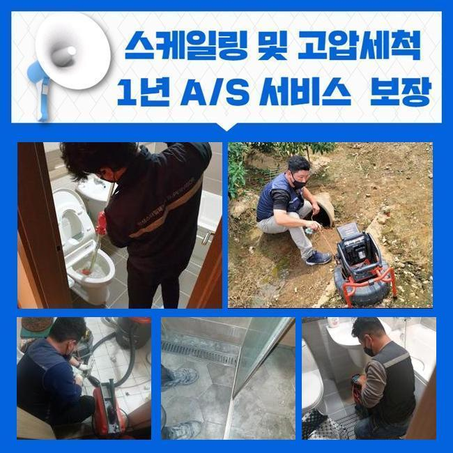
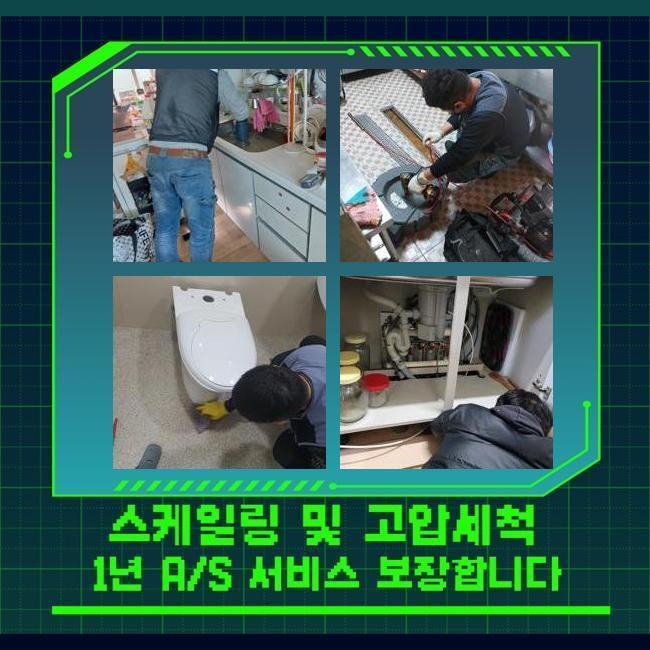
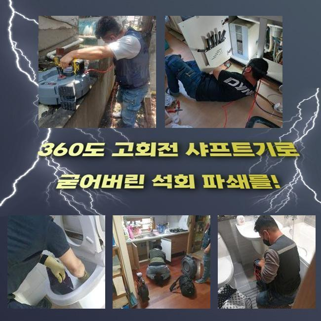
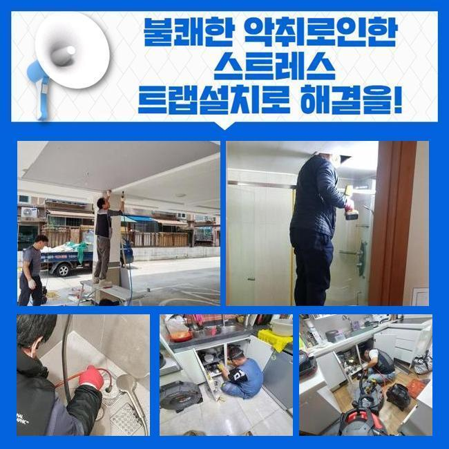
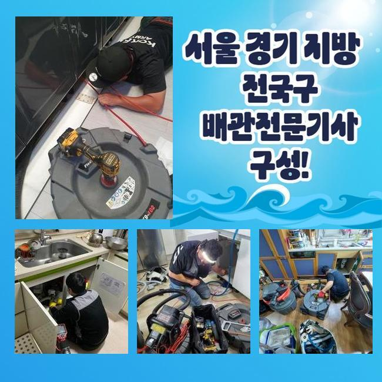
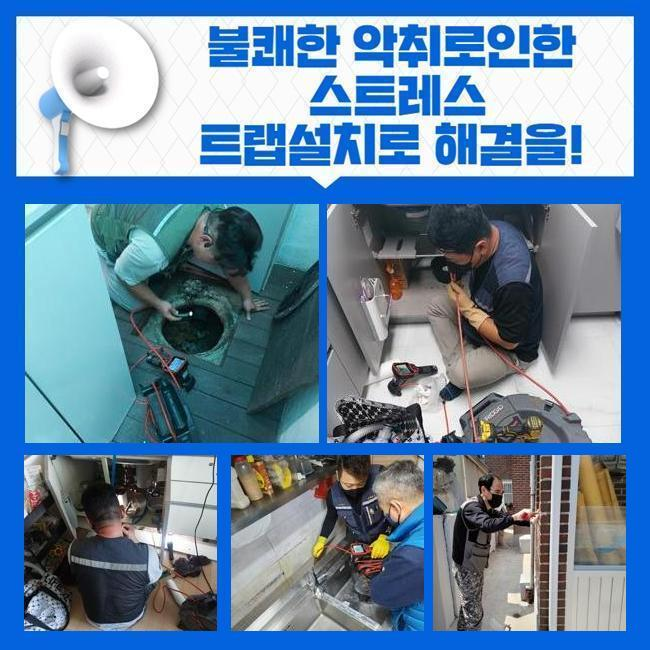

🏠 안산 중앙동욕실뚫음 초지동 배관뚫기 출장수리
안산 중앙동 하수구막힘 전문 시공 후기

📋 작업 개요
- 위치: 안산 중앙동, 중앙동, 안산
- 서비스 유형: 하수구막힘, 배관막힘, 역류해결, 뚫는업체, 배관청소
- 작업 일시: 2025. 1. 14. 15:43
- 업체명: 하수구수사대 (010-5615-2118)
🔍 문제 상황
안산 중앙동욕실뚫음 초지동 배관뚫기 출장수리
얼마전 물이 안내려가 스트레스를 받고 계셨던 고객께 연락이 왔었죠
의뢰자께서는 배관과 연관된 전문진들의 분은 아니였으나 본인만의 해결책을 가지고있던 모습이였어요
고객분은 하수관을 닦아주고 정확한 지점을 찾으려고 관찰해보았으나 어디가 문제인건지 찾을 수 없어 저희업체께 문의하셨던 것이였습니다
해당 장소에 도착하니 지속적인 시도로 고생하셨던 것이 눈에 띄었어요
고객님 차원에서는 확실한 근원들을 알아내기힘든 경우들이 상당합니다
해당 장소에서 이곳저곳을 확인해봤더니 괄목할만한 증세는 없는 상태였죠
의뢰자분은 공용관로에서 원인이 존재할 가능성들이 농후하다고 생각했죠
더불어 식물과 나무가 많이 있다면 하수관으로 침투할수도 있고 이물이 흐를 여지가있습니다
다양한 요소로 인하여 외측의 배수관이 막히게될 수 있어요

🔎 원인 분석
💡 전문가 진단: 정밀 진단 장비를 사용하여 슬러지의 고착 여부를 판명하고 타격/세척 작업을 실시했습니다.
고객분에게 지금 의심하는 까닭을 설명하고 바깥쪽을 진단해줄것을 말씀드렸죠
고객도 안내드린 내용들을 들으시고 외측하수구의 검사절차에 수락을 하셨어요
시공을 착수하기 이전에 기기의 점검도 빠트리지 않았어요
배수결함의 까닭은 특정할 수가 없죠
배수설비가 드러나있으면 담배꽁초와 같은 주변에서 유입된 잔재들이 하수관으로 쌓이게되죠
바깥쪽에 강수상황에 처했을때 외부시설의 실태를 소홀히 하면 점점 수렁으로 빠지게 될거에요
또한, 나무의 하수관으로 침투되는 현장도 종종 있죠
배수관을 감싼다거나 심할땐 균열을 생성하는 문제로도 야기시켜요
위와같은 문제에선 배수가 멈춰버려 2차적인 피해들이 벌어지게돼요
또한 노후이슈가 있다거나 파손된 문제에서도 흐름들이 이뤄질 수가 없어서 막힐 수 있어요

🔧 작업 과정
매립시기가 꽤 지나 표면이 튼튼하지 못하면 여러 폐기물들이 누적되는 기반이 조성됩니다
이어서 일반적인 배수결함의 이유는 적재적소의 관리를 신경안써서인데요
시기적절하게 소홀히 하면, 작은 잔해물이 자리를 잡으면서 막히게되는 사태가 심각수준으로 치닫을거에요
결과적으로는 외측을 시기적절하게 체크해보고 관리해주는것이 예방으로서의 실질적인 방법이겠습니다
수많은 이유들을 인지하시고 앞서서 문제들을 피하는게 중요하겠습니다
내시경기기로 외부시설의 상태들을 체크해봤습니다
내시경으로 확인하니 하수관의 지점마다 이물들과 기름슬러지로 엉망이 된 것이 목격되었어요
이와같이 배수관이 막혀버리면 물의 배수가 불가하여 역류문제들도 발생되므로 대응을 취하시는게 중요하겠습니다
검수과정 중 여러 폐기물들이 퇴적된 위치를 집중하여 청소키로 결정했죠
고압분사방식을 준비해 오염된 관로를 구석까지 청소해주었어요
덩어리졌던 이물들을 안에서부터 청소해주니 정체되고있던 하수들이 흘러나왔어요
최초에는 부유물들이 나오기 시작했고 여러 폐기물들이 청소되며 시간이 흐름에 따라 원활히 컨디션을 회복했는데요
물이 수월하게 배출되는 모습들을 체크해보며 고객도 전부 보셨습니다
전 과정이 진행되고있는 중에 고객분과 얘기하면서 이물이 누적되는 주요 이유들을 말씀드려보니 고객도 궁금하셨던 내용을 질문했어요
이로써 의뢰자께서는 관리측면의 중요성들을 인지하게되었고 지속적으로 적재적소의 검수의 불가피성을 인지하셨어요
성황리에 청소가 끝나고 하수관로가 완전히 되돌아오고 고객의 경우 빠져나가는 현상도 볼 수 있었어요


✅ 작업 완료
고객께도 결과들에 대해 설명하고 지속적으로의 관리방법들까지 안내했답니다
정기적으로 외측을 살피고 필요 시 전문가들의 대응을 고려하는것이 좋은 방법이라고 말씀드렸어요
이것으로 고객에게서 고민들을 해결하게되어 다행스러웠네요
의뢰인분의 수월한 유수에 적신호가 켜지지않도록 편하실 때 저희의 전문가들에게 상담을 진행해보세요



⚠️ 하수구 배관 막힘 예방 및 관리 가이드
- ✅ 머리카락, 비닐, 물티슈 등 물에 분해되지 않는 이물질은 하수구 유입을 절대 금지해 주세요.
- ✅ 하수구 거름망을 씌우고 모여진 이물질은 주기적으로 쓰레기통에 바로 비워주셔야 합니다.
- ✅ 배관 노후가 심할 경우 이물질이 더 쉽게 걸리므로 주기적인 배관 세척(고압세척 등)을 권장합니다.
- ✅ 작업 후 1년 이내 재발 시 하수구수사대에서 무상 A/S 보증 서비스를 제공합니다.
💡 핵심 정리
- 확실한 장비 작업(내시경 점검 및 샤프트 스케일링)으로 원인을 뿌리 뽑습니다.
- 작업 후 1년 이내에 동일한 부위 재발 시 100% 무상 A/S 서비스를 보장합니다.
- 서울 · 경기 · 인천 전 지역에 24시간 언제든 긴급 출동할 수 있도록 항시 대기 중입니다.
❓ 자주 묻는 질문 (FAQ)
🚨 안산 중앙동 하수구막힘 문제로 고민이신가요?
정확한 원인 진단과 확실한 시공으로 재발 없는 해결을 약속드립니다.
24시간 긴급 출동 | 서울 · 경기 · 인천 전지역 | 1년 내 재발 시 무상 A/S